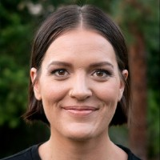
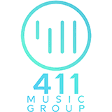

Stephanie Podolak
Recent Projects: HTML, CSS, JavaScript


About Me
Advanced technology troubleshooter skilled at solving complex biotechnical problems in high-pressure environments • Specialized in bridging non-technical and technical knowledge gaps through empathetic communication, exceptional situational awareness, and a strong scientific knowledge base • Previously employed in surgery as an intra-operative neurophysiologist utilizing electrophysiological monitoring systems to map patient nerve pathways in order to prevent iatrogenic injury • Weekend music maker and biohacker
Education:
- BA Biological Psychology w/Honors, California State University-San Bernardino, 2010
- ABRET Certification for Neurophysiological Monitoring, 2012 (renewed in 2018)
- Epicodus, 2020!
“We are what we repeatedly do. Excellence, then, is not an act, but a habit.”
Work Experience
Expert technologist solving complex biotechnical problems in surgical environment. Specialized in bridging non-technical and technical knowledge gaps through empathetic communication and exceptional situational awareness. Utilize electrophysiological monitoring systems to map patient nerve pathways in order to prevent iatrogenic injury. Contracted with physicians through multiple monitoring companies. Soon, I'll be switching to a career in tech!
Intraoperative Neurotechnologist
Utilize electrophysiological monitoring systems to map patient nerve pathways in order to prevent iatrogenic injury. Contracted with physicians through multiple monitoring companies.
Lead Neurotechnologist
Regional neuromonitoring manager for greater Los Angeles area overseeing daily clinical operations.
Surgical Recovery Technician
Excised and procured cadaver tissue for medical transplants throughout San Bernardino and Riverside county.
Research Assistant
Performed data analysis, literature reviews, solution preparation, behavioral observation, and small animal surgery.
Personal Interests
Songwriter for Sestra Music
Signed with 411 Music Group, LLC. TV and media placements on NBC, Oxygen, Samsung Mobile and more
Contact
Here are the best ways to contact me in order of my preference:
- email:stephpodolak@gmail.com
- linkedIn:linkedin.com/in/stephpodolak
- cell: 909.844.1892